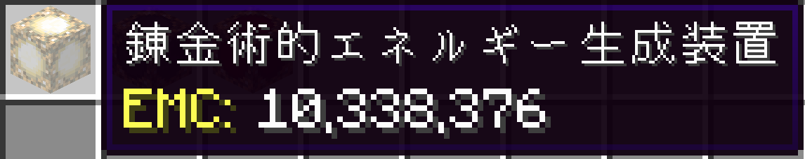
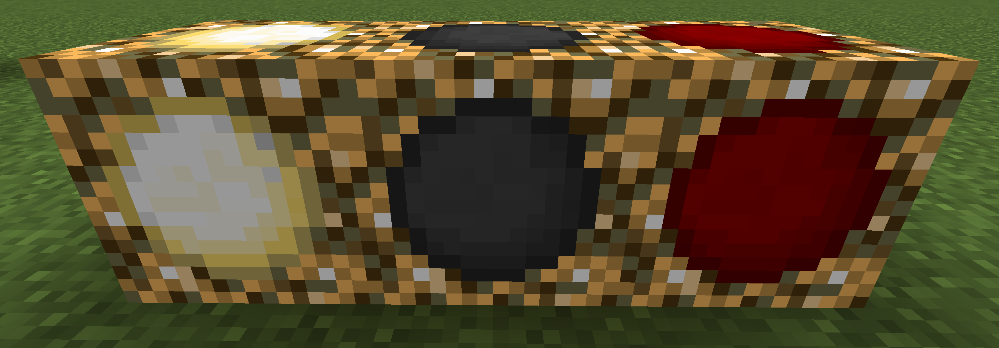
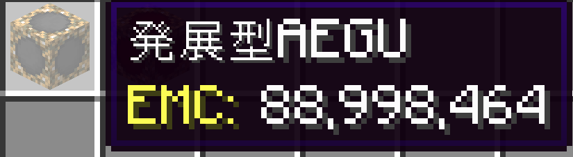
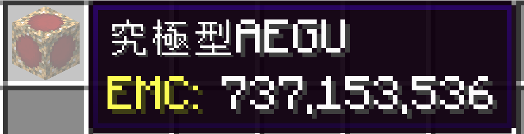
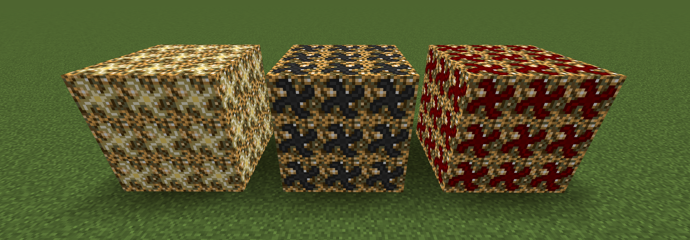

GRADE 01
Alchemical Energy Generation Unit
最初のグレード。ProjectEのEMCを扱う装置として再実装されています。

PROJECTE ADD-ON · NEOFORGE 1.21.1
昔のPEAAを今の環境でも。まずは3段階のAEGUを1から再実装した、ProjectEアドオンです。
EMC CHARGE 0% — クリックで装置へ送る

ボタンでグレードを切り替えると、ゲーム内ツールチップと概要が変わります。
GRADE 01
最初のグレード。ProjectEのEMCを扱う装置として再実装されています。

GRADE 02
基本AEGUから強化された、2段階目の装置です。

GRADE 03
さらに進化した、3段階目の最上位グレードです。

アイテムとして並ぶ姿と、ブロックとして設置した姿を実画像で紹介します。

現時点で公開されているのはAEGU 3種です。元のPEAAにあった残りの機能は、実装済みとして扱っていません。